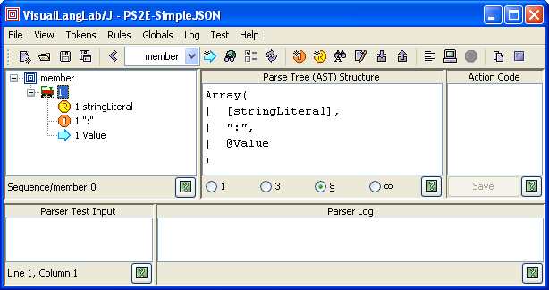

).
).The terms parse-tree and AST (short for Abstract Syntax Tree) are used interchangably thoroughout the documentation to mean the same thing -- the structure of information gathered during the parsing process. This is how Wikipedia defines AST.
The discussion below explains two related issues: how VisualLangLab determines the structure of the AST for any parser-rule (or grammar-tree), and how the user should design and program action-code to process an AST. The same knowledge is also required when writing a custom application as described in Using the API
This version of VisualLangLab is written in Scala, so the AST is expressed in terms of standard Scala data-structures. While knowledge of Scala programming is not needed to develop a parser, a rudimentary understanding of the data-structures is required for understanding the AST. For a formal introduction to Scala use any of the books featured on the official Scala web-site.
The following standard Scala types are used in constructing ASTs.
The AST of a complete parser-rule (or grammar-tree) is built up by recursively nesting these
structures as required. That is why the content-type parameter is always
Any (to permit unconstrained nesting). The examples in the following
sections illustrate this concept.
The structure of an AST for any particular grammar-tree is determined by the arrangement, type, and multiplicity of the nodes comprising the grammar-tree. Starting from the root-node, the following rules are applied recursively:
String (identical to the
Literal itself)String (the lexeme or the
matched input)Array[Any] containing the items
contributed by its child nodesPair[Int,Any] where the first member
is the (0-based) index of the matching alternative, and the second member is the
value contributed by the matched alternativeList[Any] containing all the matched
itemsAdditionally, certain annotations cause the structure defined above to be modified in the following ways:
Option[Any]. A None is returned if the expected item was
not found in the input, and a Some[Any] is returned if the item was
presentList[Any]. A Nil is returned if
the multiplicity is *, and no matching elements were found in the inputArray[Any], but just
passes on the AST produced by its one contributing child nodeThe examples below illustrate these principles using grammar trees from the built-in parser for SimpleJSON. Remember that the AST shown in the figures is the AST of the selected node. Also, remember that the root-node of a grammar-tree merely reflects the AST of the contained tree.
Figure-1 below illustrates the AST of a Sequence node. It also shows the result of testing the grammar-tree with some user-provided input.

Figure-1. Sequence node AST
The text displayed in the TextArea to the right of the grammar-tree is the structure
of the AST that will be used by VisualLangLab for this grammar-tree. Observe that the
structure is an Array with three elements (corresponding to the number of
child-nodes of the Sequence node). The format used for the array's elements is
described below:
The two TextAreas at the bottom of the GUI show the result of actually testing the parser. Some test input ("count" : 55) has been typed into the Parser Test Input area, and the result of running the parser appears under Parser Log. The AST actually generated is on the last line of the output (Array("count", :, Pair(3, 55))).
As described in Testing Parsers the displayed
grammar-tree is run by choosing Test -> Parse input from the main menu or by
clicking on the corresponding toolbar button ().
The grammar-tree in Figure-2 below illustrates the AST of a Choice node.
Figure-2. Choice node AST
The displayed AST illustrates the format used to describe the AST of a Choice node.
The value actually returned by the parser is any one of the alternative
Pair[Int,Any]s shown. The first member of the Pair is the
index of the matching alternative, while the second member is the value obtained by
parsing the actual alternative.
The text in testing area show the result of a parser run. The text 3.14 was
typed into the Parser Test Input area, and the result of the run is the output
Pair(3, 3.14) (last line under Parser Log). The first member of the
Pair in this example (the value 3) is the 0-based index of the
matching alternative (the Regex node floatingPointNumber).
The grammar-tree in Figure-3 below illustrates the AST of a RepSep node.

Figure-3. RepSep node AST
Observe the the AST in this case is a 2-level structure -- a List
nested within an Array. The List represents the
RepSep, while the Array represents the containing
Sequence.
The parser when tested with the following input: [false, 3.14, "hello"] produces this AST as output: Array([, List(Pair(6, false), Pair(3, 3.14), Pair(2, "hello")), ]).
Our last example Figure-4 below illustrates the AST of a Sequence node with just 1 contributing node. It also shows the effect of applying the drop annotation to the child node of a Sequence.

Figure-4. Sequence node AST with 1 contributing node
This example uses the same grammar-tree as the previous example, but applies the drop annotation to the Literal nodes LBKT and RBKT (see Editing the Grammar Tree). The presence of the attribute is clearly evident in the grammar tree from the textual annotation as well as the overlay applied to the basic Literal icon.
The AST changes drastically beacuse of these modifications. The two dropped
nodes do not appear in the AST. And, since the Sequence has just one child node left
that contributes to the AST (the RepSep), the Sequence merely passes on the AST of the
RepSep. It does not need to produce an Array.
Within VisualLangLab action-code is an anonymous function literal written in Scala or Javascript, and this section assumes that the reader knows one of those languages reasonably well.
An action-code function literal must have one argument that can accept any value. The value returned by the function depends on the overall design of the parser.
An action-code function is called twice by the parser: once before parsing of the associated node begins, and again after parsing of the node has ended. The first invocation allows the function to perform any setup actions, while the second invocation is intended for AST processing. The action-code function can distinguish the two invocations by testing the value of its argument. The argument has a null value during the first invocation, but has a reference to the AST (which is necessarily non-null) during the second invocation. Action-code functions must test the argument's value and act accordingly.
To facilitate the design of stateful behavior, and give action-code access to required environmental information, the action-code launcher arranges for certain predefined global variables to be available. These variables are listed in Table-1 below.
Table-1. Predefined global variables| Name | Description |
| VLL | See descriptions for specific languages below |
| $line | The line number in the input |
| $col | The column number in the input |
| ParserTestInput | The GUI's JTextComponent containing user-provided test input (just under the Parser Test Input label) |
| ParserLog | The GUI's JTextComponent containing parser log text (just under the Parser Log label) |
| InputCharSequence | A java.lang.CharSequence containing the
input text matching this node |
The last three variables above (InputArea, and LogArea) are useful for writing automated test scripts as described in Wrapper with Action Code.
Action-code in Scala is written as a function-literal that accepts a single argument
of type Any and returns a value of any type (depending on the overall
design). The code can use all of the Scala and Java APIs. The following code is an
example taken from the built-in ArithExpr with action-code parser:
(a: Any) => a match {
// first invocation (do nothing) ...
case null => null
// second invocation (process AST) ...
case Array(f: Double, lst:List[_]) =>
var res = f
lst.foreach(_ match {
case Pair(0, f2:Double) => res *= f2
case Pair(1, f2:Double) => res /= f2
})
res
}
In Scala the predefined variable VLL behaves as if it has a data member
called value defined like this: var value: Any = _, so action-code
can store any value like this: VLL.value = /*some value*/, and recover the
value later by using VLL.value.asInstanceOf[/*some type*/].
Under the hood, any user-provided Scala code must be actually compiled before use, so the presence of action-code in Scala does perceptibly slow down the VisualLangLab GUI at certain points.
Action-code in Javascript is written as an anonymous function that accepts one argument and returns a value that depends on the overall design. To simplify the writing of action-code in Javascript, VisualLangLab transforms all Scala container types into native Javascript arrays. The following transformations are performed:
The code is interpreted by the JVM's embedded Javascript engine (Rhino), and can therefore use the JDK API. The following code is an example taken from the built-in ArithExpr with action-code parser.
function (arg) {
// first invocation (do nothing) ...
if (!arg) {
return;
}
// second invocation (process AST) ...
switch (arg[0]) {
case 0:
return parseFloat(arg[1]); break;
case 1:
return arg[1]; break;
}
}
In Javascript the predefined variable VLL is an object with no particular data or function members, but which can be modified by the action-code as required.